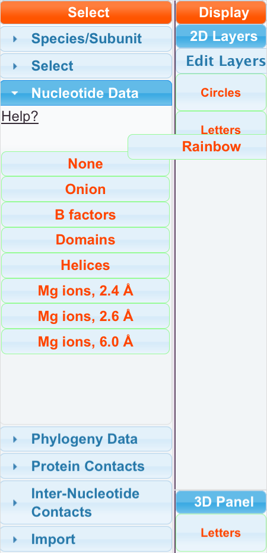
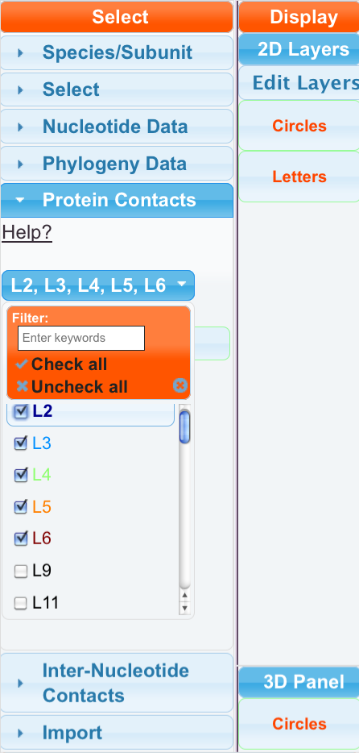
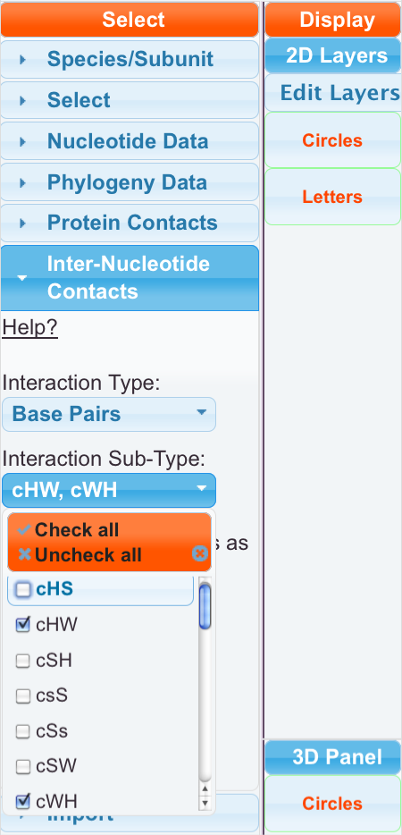

You can display data in the 1D, 2D, and 3D panels by selecting data from one of the data sections in the Main menu. We have “Nucleotide Data”, “Phylogeny Data”, “Protein Contacts”, and “Inter-Nucleotide Contacts” sections. Each of these sections contains one or more datasets represented by draggable objects (green outline). To simultaneously display a dataset in the 1D, 2D, and 3D panels, you drag the data object from the Select section to the Display section of the Main Menu, and drop the object onto one of the two pre-created layers: “Circles” or “Letters”. Dropping the object onto the Letters layer will display the dataset by varying the color of nucleotide letters in the secondary structure, whereas dropping the object on top of the Circles layer will display the dataset as a solid colored circle that can be positioned in front of, or behind, the nucleotide letters. Any additional layers you create will behave like the Circles layer. See descriptions of the data in the “Our Data” section of this manual.
In the Data and Display sections of the main menu you can see a brief description of each type of data by hovering the mouse over the data object or over the Layer. You also can find a link to the relevant help section of the written manual, with a much more detailed description of the data, and relevant scientific citations.
Here, we are dragging the Rainbow (red outline) data object to the letters layer object.
In the Protein Contacts section, you can chose to visualize the entire set of the proteins for a ribosomal subunit, or you can select a desired protein or subset of proteins from the list in the Protein Contacts menu by checking the boxes. The set of proteins are automatically displayed in the 3D Panel. The protein contacts can be displayed on the 2D panel by dragging the data object onto a layer. The nucleotides will then become colored to match the color of the proteins that they are in contact with in the crystal structure, as shown in the 3D panel. The proteins names will be colored to correspond to their current color.
You can also graph “Inter-Nucleotide Contacts” in the 2D panel, which are shown as lines between nucleotides that are close together in 3D space according to various criteria. Select something from the Interaction Type menu. Then, you may be able to furthur filter by Interaction sub-types. You will see that lines appear between some nucleotides. Note that the “Inter-Nucleotide Contacts” data are independent and cannot be dragged to the “Circles” or “Letters” layers. They are automatically drawn to the Interactions layer, not visible in the Display Section.
